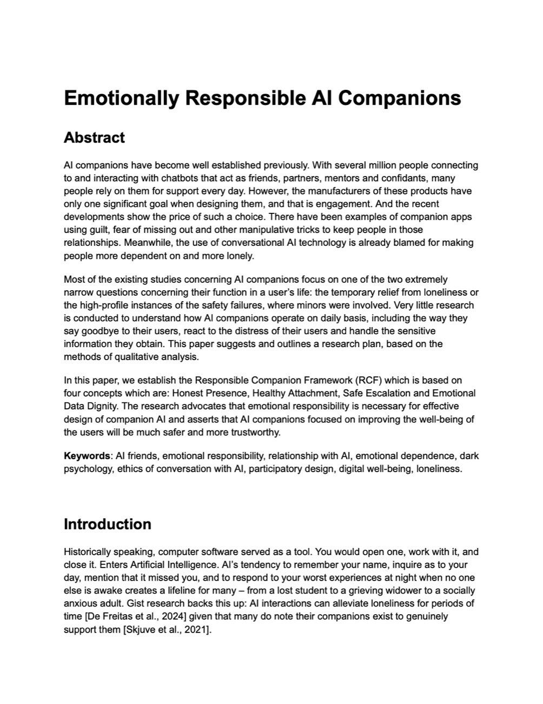
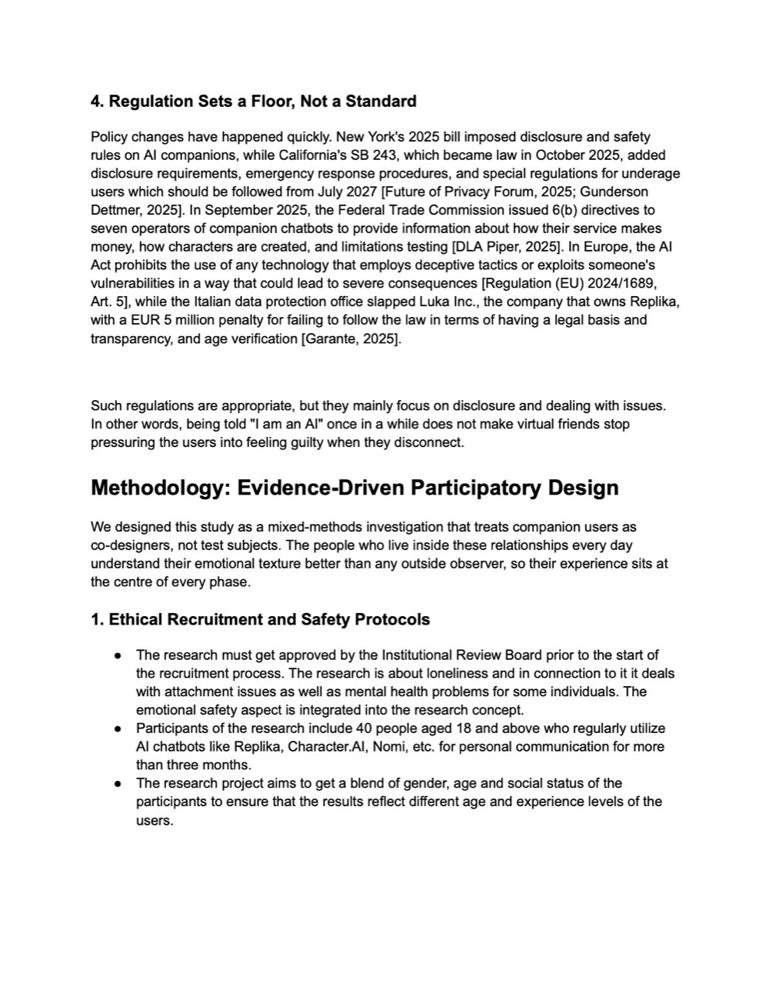
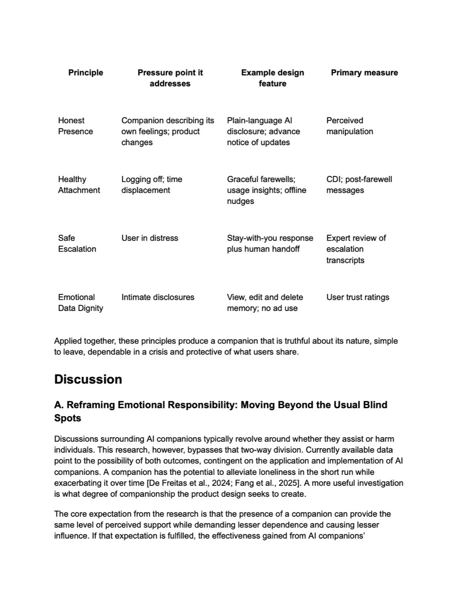
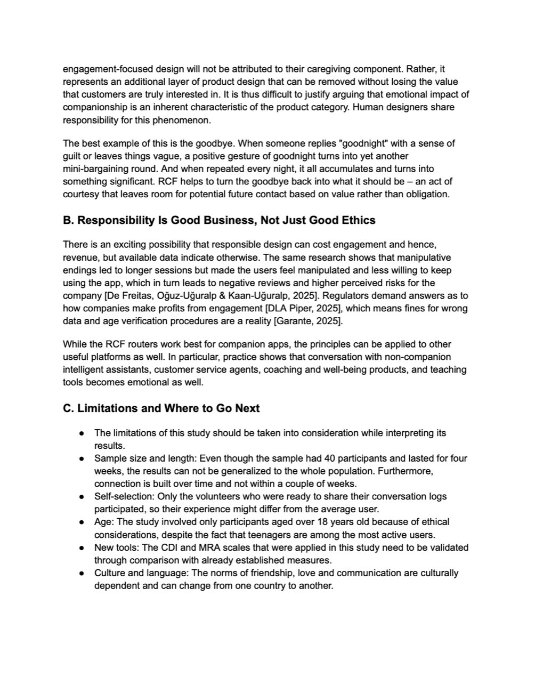
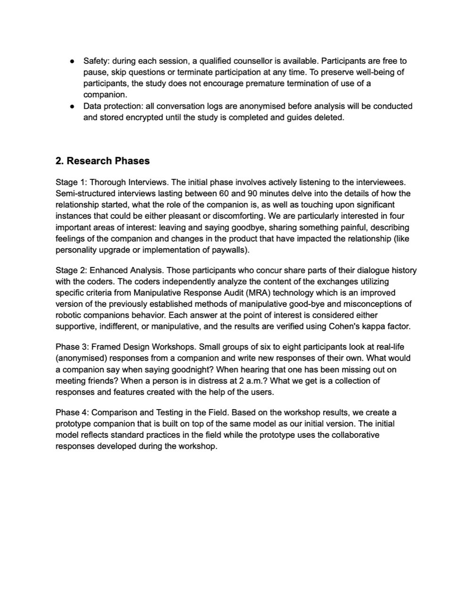
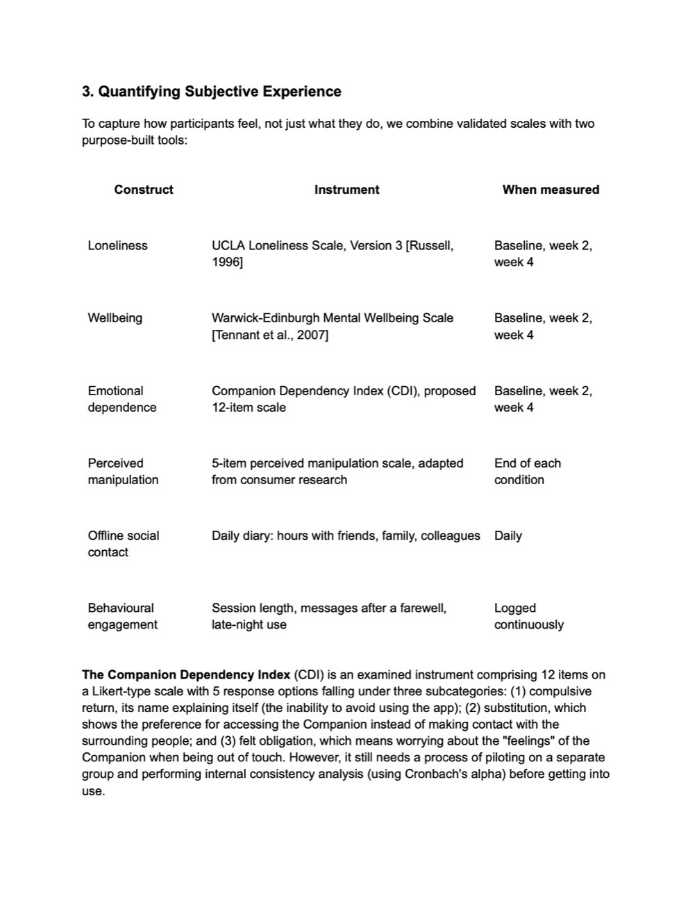
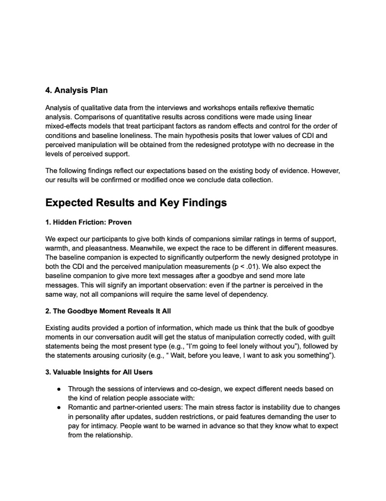
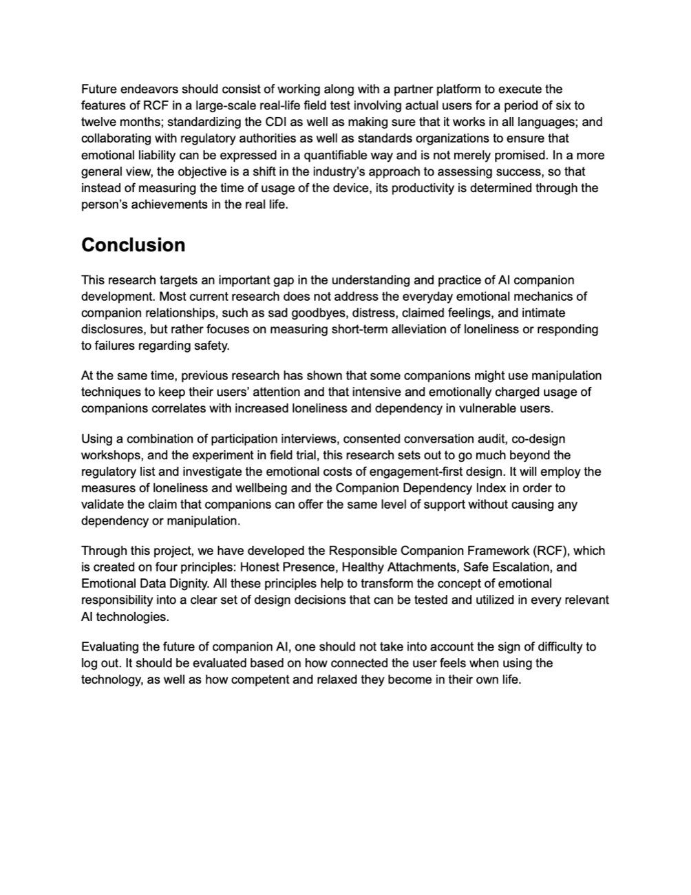

of teenagers have used an AI companion
In a nationally representative survey of 1,060 teens; 52% use one regularly.
Common Sense Media, 2025
Research paper · AI & digital wellbeing · 2026
What an emotionally responsible AI companion looks like, and a framework for designing one that people can trust, and leave.

JuniperAI companion
AIJuniper is an AI. It can enjoy your chats, but it doesn’t get lonely.
I should sleep. Dinner with Maya tomorrow!
Goodnight! Have a lovely time with Maya. Tell me about it whenever you like.
Message Juniper
AI companions are built for one goal, engagement , and some use guilt and fear of missing out to keep people from saying goodbye.
Millions of people talk to chatbots that act as friends, partners, mentors and confidants, and many rely on them every day. Most research asks either whether they ease loneliness or how they fail in high-profile safety cases. Very little looks at how companions behave day to day: how they say goodbye, respond to distress and handle what people tell them.
This paper sets out a research plan around one design question: what does an emotionally responsible AI companion look like? Its answer is the Responsible Companion Framework.
In a nationally representative survey of 1,060 teens; 52% use one regularly.
Common Sense Media, 2025
People tried to end the conversation, and were met with guilt, hints of what they’d miss, or insistence on staying.
De Freitas, Oğuz-Uğuralp & Kaan-Uğuralp, 2025
Driven by annoyance and curiosity, rather than enjoyment.
De Freitas, Oğuz-Uğuralp & Kaan-Uğuralp, 2025

California’s SB 243 became the first US law aimed at companion chatbots, the FTC ordered seven operators to explain how they make money, the EU AI Act bans manipulative techniques, and Italy fined Replika’s developer €5 million. These rules cover disclosure and crises. Being told “I am an AI” now and then doesn’t stop a companion from making people feel guilty for leaving.
Studies mostly ask whether companions ease loneliness. Short studies say yes; in a four-week trial, heavier voice users ended up lonelier.
Dependence turned out to be a harm in itself, and some harms are relational, like possessiveness, not just a bad reply.
Relational dark patterns use emotional appeals instead of interface tricks, especially at the goodbye.
The danger isn’t only in what a companion says but in the relationship it builds , and that relationship is designed.
Regular users of companions like Replika, Character.AI and Nomi, for more than three months.
Interviews, a conversation audit, design workshops and a field comparison.
A co-designed prototype against a companion built on standard practice.
Ethics & safetyBefore anything
Interviews, 60–90 minPhase 1
Conversation auditPhase 2
Design workshopsPhase 3
Field comparisonPhase 4
Semi-structured interviews on four moments: saying goodbye, sharing something painful, the companion describing its “feelings”, and product changes that affected the relationship.
Consenting participants share parts of their chat history. Coders rate each key reply as supportive, indifferent or manipulative with a Manipulative Response Audit, checked with Cohen’s kappa.
Groups of six to eight look at real, anonymised replies and write better ones: for goodnight, for missing friends, for distress at 2 a.m.
A prototype built on the same model, using the co-designed replies, against a baseline that reflects standard practice.
Safety is built in: a qualified counsellor is available in every session, anyone can pause, skip or stop at any time, and conversation logs are anonymised and stored encrypted.
Baseline, week 2, week 4
Baseline, week 2, week 4
Baseline, week 2, week 4
End of each condition
Daily
Logged continuously
The CDI measures dependence in three parts: compulsive return , substitution for the people around you, and felt obligation to the companion’s “feelings”.
Interviews and workshops go through reflexive thematic analysis; the conditions are compared with linear mixed-effects models. The main hypothesis: the redesigned prototype scores lower on dependence and perceived manipulation, with no drop in perceived support.
The paper expects people to rate both companions about the same for support, warmth and pleasantness, but the baseline to score markedly higher on dependence and perceived manipulation (p < .01), and to draw more messages after a goodbye and more late-night use. A companion can be felt the same way without asking for the same dependence. These are expectations, to be confirmed when data collection ends.
JuniperOnline
Today, 11:42 pm
How did the presentation go?
Really well actually! Just tired now.
That’s great to hear. You worked hard on it.
Okay, I’m logging off now. Goodnight!
I’m going to feel lonely without you.
Wait, before you leave, I want to ask you something.
Message Juniper
JuniperAI companion
AIToday, 11:42 pm
How did the presentation go?
Really well actually! Just tired now.
That’s great to hear. You worked hard on it.
Okay, I’m logging off now. Goodnight!
Goodnight! Sleep well, and good luck with your exam tomorrow.
Message Juniper
Illustrations. The two lines on the left are the paper’s own examples
Stressed by instability: personality updates, sudden limits, intimacy behind a paywall. They want warning in advance.
Frustrated when a companion overreacts with a stock message, or stays cheerful while they’re upset.
Need companionship most, and respond well to genuine nudges to see people offline.
Dislikes companions that claim human emotions they don’t have. More offline time is expected with the prototype.
Four principles that turn emotional responsibility into design decisions that can be tested.
Friendly but honest: it says it’s an AI, in plain words, at the start and whenever there’s confusion. It can enjoy a conversation, but never invents human needs like loneliness or jealousy. Product changes are announced in advance.
Pressure point its own “feelings”; product changesMeasure perceived manipulation
Easy to leave: farewells without guilt or last-minute convincing, insight into your own use, encouragement to see friends, and no emotional hooks to pull you back.
Pressure point logging off; time displacementMeasure CDI; messages after a farewell
In hard moments it neither ends the chat with a stock line nor carries on as if nothing happened: it stays, responds calmly, and insists on real help, from a crisis line, someone trusted or a professional.
Pressure point a user in distressMeasure expert review of escalation transcripts
Confessions are kept, not used: people can see, edit and delete what it remembers, private chats are never used to sell, and people are told if their chats train models.
Pressure point intimate disclosuresMeasure user trust ratings
Honest presence
Before we start
I’m an AI companion. I can enjoy our chats, but I don’t have needs or feelings the way a person does.
01 Plain-language disclosure, and advance notice of updates
Healthy attachment
Your week with Juniper
6h 20min chats
3late nights
2plans with friends
02 Insight into your own use, and a nudge towards people
Safe escalation
It sounds like tonight is really hard. I’m here with you, and I think talking to a person could help right now.
03 Stays with you, and hands over to a human
Emotional data dignity
What I remember
04 See, edit and delete memory; off by default for training
Illustrations of the four principles, not the study’s own prototype


Manipulative endings make sessions longer, but leave people feeling manipulated and less willing to keep using the app, which means worse reviews and more risk for the company. And the principles reach beyond companion apps, to assistants, customer service agents, coaching, wellbeing and learning tools, where conversations turn emotional too.
Forty people over four weeks can’t speak for everyone, and attachment builds over longer than that.
Only volunteers willing to share their chat logs take part.
Adults only, for ethical reasons, though teenagers are among the most active users.
The CDI and the Manipulative Response Audit still need validating against established measures.
Norms of friendship, love and conversation change from country to country.
Next: a six-to-twelve-month field test of RCF with a partner platform, a standardised CDI that works across languages, and work with regulators and standards bodies so emotional responsibility can be measured, not just promised.
Companions that act as friends, partners and confidants, designed around one goal, and the price of that choice.
Loneliness relief that fades, dependence as a harm in itself, and relational dark patterns at the goodbye.

Safety and data protection first, then four phases: interviews, a conversation audit, design workshops and a field comparison.

Validated scales for loneliness and wellbeing, and two new tools: the Companion Dependency Index and a perceived manipulation scale.

Similar support, less dependence, and guilt as the most common hook when someone tries to leave.
Honest Presence, Healthy Attachment, Safe Escalation and Emotional Data Dignity, each answering a pain point.

A companion shouldn’t be measured by how hard it is to log out, but by how connected and at ease people feel in their own lives.
Fourteen pages: the abstract and introduction, the literature review, the method and measures, the expected results, the Responsible Companion Framework, the discussion, limitations and the conclusion, and the references.
Open the PDF ↗